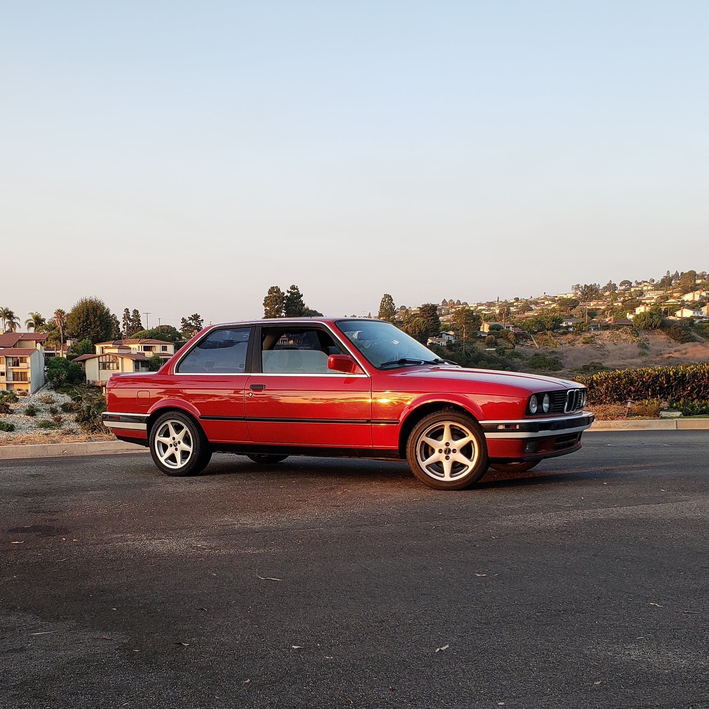

BMW E30
In a joint decision with my boyfriend, we split 50/50 and purchased an E30 BMW in March of 2018 and have been learning the inner workings of the car. This ranges from changing the gears in the odometer to changing out the power steering belt, AC belt, alternator belt, and timing belt, changing out the spark plugs, doing a full fluid flush, and learning how to drive a manual car. It's been an adventure. We've recently switched the bumpers from the aluminum bumpers with the plastic trim to the plastic bumpers.
Here is a link to my instagram page: Link to Instagram
This is a link to download a vectored version of my 1988 325is E30 that I created in my spare time: Vectored E30